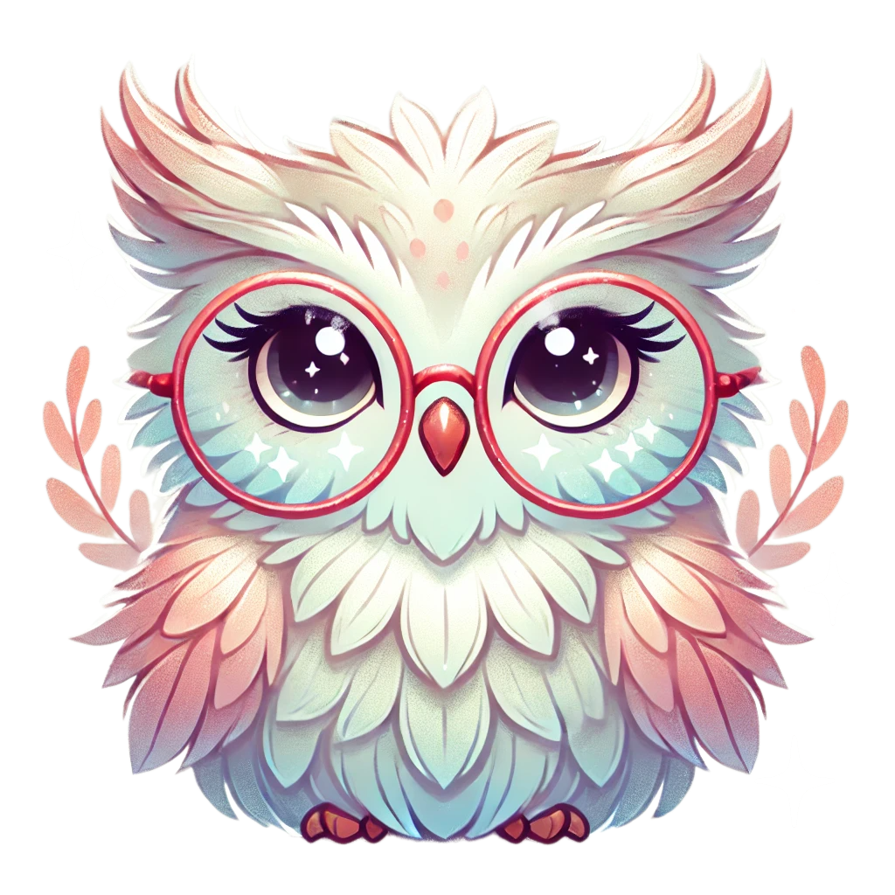

Bem-vindo ao seu espaço acolhedor, onde técnicas de autocuidado são aplicadas a todas as idades. Este guia é baseado em comprovações científicas e oferece suporte a todos os públicos, promovendo saúde mental e bem-estar. Nossa página é acessível e projetada para atender às necessidades de todos, com foco em acessibilidade digital, garantindo que pessoas com diferentes níveis de habilidade possam navegar e interagir de maneira fácil e intuitiva. Respire fundo e encontre sua paz interior.
Calmi: Um guia amigável que ensina técnicas de respiração e mindfulness para ajudar a controlar a ansiedade.
Corina : Trabalha a autoestima e a aceitação, oferecendo dicas para lidar com a pressão social.
Tempestade: Ajuda a gerenciar a raiva e a impulsividade, fornecendo estratégias para lidar com situações desafiadoras.
Guia: Seu mentor na floresta, sempre pronto para ajudar e oferecer conselhos práticos.
Empodera: Um ser da natureza, empoderando mulheres para conquistarem seus objetivos. Use suas dicas para aumentar a autoconfiança e melhorar seu currículo.
S.O.S: Personagem criado para emergências emocionais. Caso precise de ajuda imediata, ele pode direcioná-lo ao CVV (Centro de Valorização da Vida), que oferece apoio emocional. Clique aqui para acessar o CVV
Quer nos dar um feedback ou pedir ajuda? Preencha o formulário abaixo: